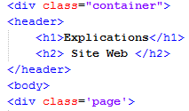
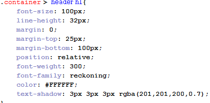
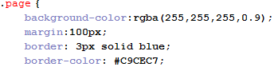
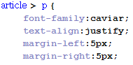
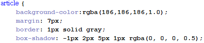
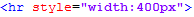
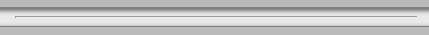
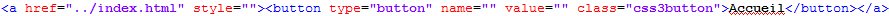
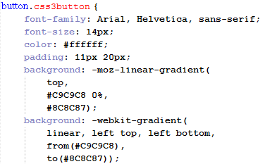

Sur une page d'explication, nous trouvons deux grands titres principaux en haut de la page, voici comment s'articule le début de notre page :

Ce début est très simple, nous avons tout d'abord crée une nouvelle class nommée container", celle-ci prend différent paramètres que nous pouvons voir si-dessous, en voici un exemple :

Ici, nous avons attribué plusieurs fonctions à ce qui se trouve dans la balise <h1>, nous l'avons placé précisement par rapport à la page margin.
Nous lui avons donner des couleurs précises color, text-shadow) et une taille désirée font-size.

Un joli titre en tête de page a été crée !
Nous avons fait de même pour <h2>, nous avons réglé les paramètres pour que le titre soit important mais moins que le <h1>.
Après avoir le haut de notre page, nous avons commencé à nous attaquer au squelette de la page, c'est à dire le <body>, à partir d'ici, nous avons ouvert une nouvelle class que nous avons nommé page,
voici ses caractéristiques :

Cette class est le résultat du grand carré blanc que nous voyons en fond, l'intêret de ce carré est de pouvoir garder le même fond pour toutes les pages et faire une délimitation avec celui-ci pour ajouter les couleurs que nous voulons au-dessus.
Celui-ci sert donc à garder une certaine harmonisation entre les pages ainsi qu'un design plus propre et délimité.
Nous avons donc rajouter une bordure grise pour garder un petit effet d'ombre, ajoutons à ça une très petite largeur de ce carré pour ne pas gêner le texte à côté.
Maintenant, nous avons attribué des caractéristiques à <p> ce qui nous permettra de garder les mêmes caractéristiques de police à chaque fois :

Nous pouvons voir que la police a été défini et restera toujours la même. Il en est de même pour la taille.
Le coeur du design de nos pages repose sur la balise <article> que nous avons crée. Celle-ci sert à faire des délimitations à la manière de la class que nous avons expliquer plus haut,
mais cette fois, avec une ombre intégrée !

Ici, nous avons rajouté quelques propriétés à cette balise en ajoutant une couleur grise, et une ombre que nous avons modifié.
Pour donner l'importance à une partie, nous avons superposé plusieurs balises <article> pour donner un aspect délimité.
Nous avons rajouté une petite barre pour délimiter l'introduction et l'explication, voici son code :

Et voici le résultat de notre petite barre dont nous avons modifié la taille à 400px pour qu'elle ne soit pas trop grande :

Pour finir, nous avons rajouté un côté utilitaire à cette page en intégrant un bouton permettant de revenir à la page d'accueil. Pour cela, nous avons utilisé les commandes suivantes :

Dans un premier temps, nous indiquons là où nous souhaitons que l'utilisateur arrive lorsqu'il clique sur le bouton. Ici, la destination correspond à l'index.
Nous ouvrons ensuite une class pour rentrer tous les paramètres que nous voulons pour notre bouton, en voici une petite partie :

Il y a plusieurs lignes pour ce petit bouton, mais nous pouvons retenir les principales qui sont la police, la taille, ainsi que le petit dégradé de couleur.
Il y a aussi les changements lorsque l'utilisateur passe la souris sur le bouton (La couleur va changer ici) désigner par hover et active désigne l'action lorsque l'utilisateur clique sur le bouton (déplacement de 1px vers le haut).